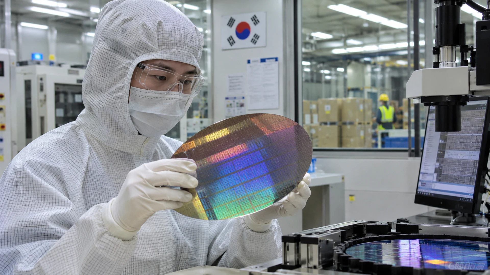

South Korea Exports Jump 93.7% on AI Chip Demand
October exports rose 93.7% as semiconductor shipments surged. Fewer working days a year earlier amplified the headline comparison.

South Korean exports rose 93.7% from a year earlier to $115.28 billion in October, according to government figures reported by Reuters. Strong semiconductor shipments supported the increase, which was the fastest annual growth rate since January 1974. The scale of the gain also warrants attention to the comparison with last year's export base.
The headline figure points to vigorous international demand for semiconductors and computers, but it requires careful interpretation. The comparison with October 2025 was also affected by the timing of the Chuseok holiday, which resulted in a different number of working days. A large year-on-year percentage change therefore reflects both underlying commercial demand and a favorable calendar comparison. Treating the full 93.7% as a pure measure of AI investment would overstate what the data show.
Chips account for an extraordinary share of growth
Semiconductor exports rose 259.4% from a year earlier to $56.44 billion, while computer exports increased 496.6%, according to the Reuters report. The technology categories benefited from strong global demand linked to artificial intelligence infrastructure, including servers and advanced memory and processing components used in large computing systems.
The calendar effect and the importance of the base
Annual growth rates are sensitive to the amount of activity in the comparison period. The Chuseok holiday shifted the number of available business days between the two Octobers, and the Reuters survey already anticipated an exceptionally large rise. The reported 93.7% increase only modestly exceeded the 93.2% median estimate.
That small difference matters for financial interpretation. A record-looking figure does not automatically represent a major positive surprise if economists had already incorporated the holiday effect and strong chip demand into their forecasts. The market response depends on expectations, the detailed export mix and the implications for future company profits, not merely on the size of the annual percentage.
More durable signals include absolute export values, semiconductor shipment volumes, pricing conditions and the trend over several months. South Korea reported September exports of more than $110 billion as well, suggesting that October's result occurred in the context of an already strong trade environment rather than as an isolated monthly spike.
Imports, the trade surplus and domestic demand
Imports increased 36% year over year to $72.78 billion, Reuters reported. The trade balance remained strongly positive at approximately $42.5 billion, although that surplus was narrower than September's roughly $49.97 billion. Imports can rise for several reasons, including the purchase of manufacturing equipment, energy products and inputs used by domestic industries.
What the figures mean for investors
Investors should watch both shipment values and pricing. A rise in exports can reflect more units sold, higher prices or a combination of the two. Those sources of growth have different implications for margins and for the duration of the cycle. An expansion led by temporary price increases could reverse more quickly than one supported by durable capacity utilization and long-term customer demand.
South Korea's trade ministry suggested cumulative exports could pass $1 trillion for the year during November. Such a milestone would underline the country's growing export scale, but the more important question for markets is whether the semiconductor and server boom can maintain momentum into subsequent quarters.
Sources and methodology
Primary sources and supporting reporting.